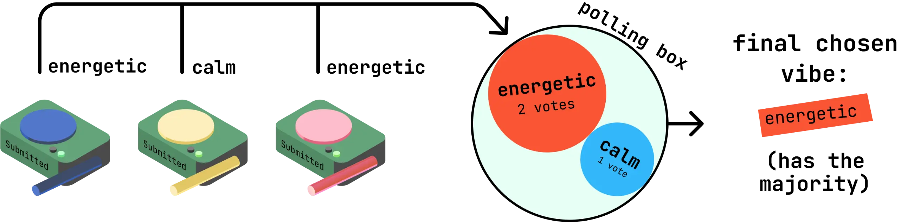
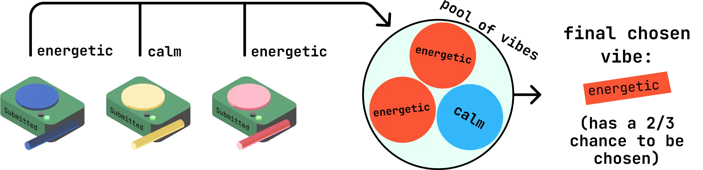

What it is
Serendipity is a DIY physical and digital system where everyone in a large collaborative space can vote for music they want played and shared within that space. Three physical devices allow individuals to vote for a "vibe" (mood) of music. A random vibe is drawn from that voting pool, playing that type of music.
People can visit Serendipity's website to see what music is playing, and, if they like the song, quickly add it to their playlist.
As part of a three-person group, I designed and created the system of how it selects music in a fair manner, Serendipity’s web interface, and most of the Arduino code.
Watch the trailer here
Voting system imbalance
Original voting system

Originally, we had a majority rules-based method of choosing vibes: the most popular vibe voted for would always be played.
A hands-on critique session with students and instructors helped us discover an imbalance in voting power. With this majority rules system, one’s taste in less popular vibes would never be heard.
New voting system

After that critique session, I initiated a roundtable discussion to disseminate feedback and pitch new ideas. We decided that a lottery-style system created an equal playing field for individual voters while also balancing feasibility.
Now, the vibe would be drawn at random from the votes gathered. The majority vote will have the odds in their favour, but everyone’s vote now has a shot to be chosen.
Web interface features
I went on to implement the new voting system in our Arduino code and build the web interface.
The web interface’s original plan was to only show the state of the physical devices. This was pointless for everyone in the space when the devices already had state indicators. To incentivize visiting the website, I used Spotify, Tidal, and Deezer’s APIs to display song details. I also added Add to playlist links that allowed users to quickly add the song to their music streaming playlist. This gave non-voters a reason to interact with the system.
Reflection
As the project progressed, it became apparent that workloads were unbalanced. I took on too many tasks as my knowledge of web, interaction, and system design aligned with this course’s content. My team members also stuck to their strengths in physical prototyping. Next time, I will focus on developing new skills while acting as a mentor for others taking over my expected job. This way, we can distribute tasks more evenly and foster better learning outcomes for each team member.